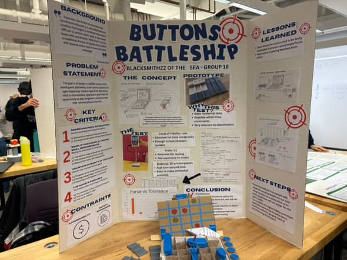
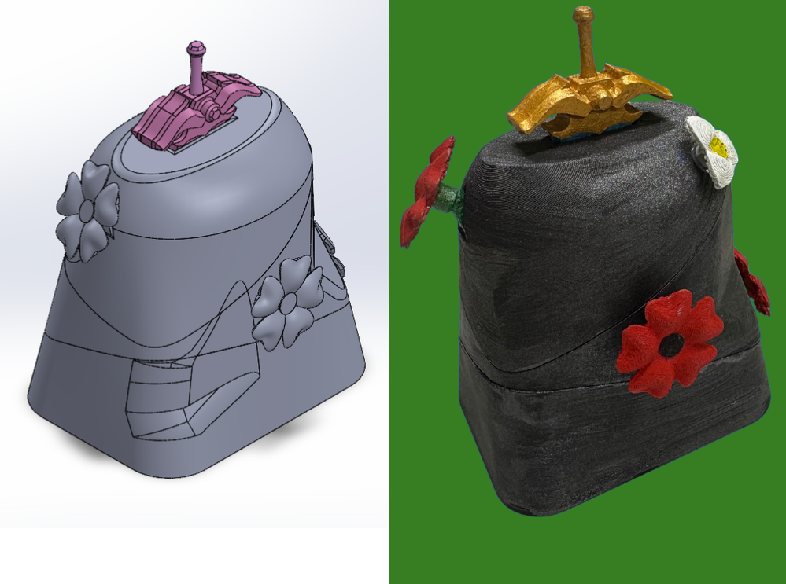
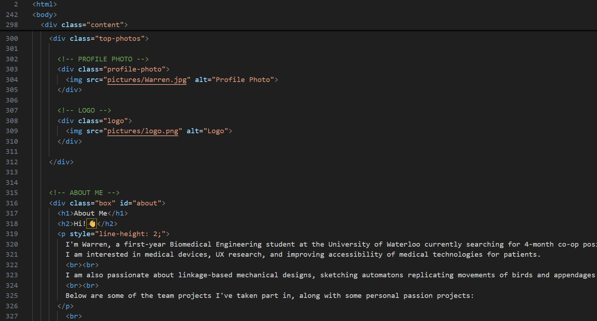
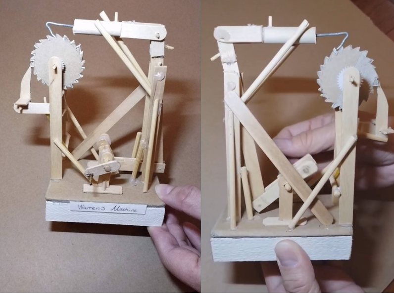

Project Spotlight
Academic Projects

Boardgame Accessibility
Sept. – Dec. 2025
Redesigned the game Battleship with team to make it more accessible for children with dyspraxia. The project focused on applying user-centered design principles to identify accessibility barriers and develop gameplay interactions that reduce the need for fine motor control while maintaining an engaging experience.
- Applied an iterative design process including empathizing, ideation, rapid prototyping, testing, and evaluation.
- Conducted quantitative analysis using Excel to compare design alternatives.
- Developed a C++ program to automate normalization and metric weighting for a QFD table.

3D-printed Puzzle
Sept. – Dec. 2025
Designed a multi-component 3D puzzle involving at least 5 unique pieces in a team setting. End product contained at least one Canadian motif.
- Worked with SolidWorks surface modeling.
- Gained knowledge in working with complex shapes.
- Worked with SolidWorks Asembly and error tolerence.
- Presented end product in presentation.

3D-printed Puzzle
Nov. 2025
Modeled the fictional spacecraft, X-Wing, from Star Wars the original series.
- Made calculation on pieces joints.
- Gained experience with mate functions in SolidWorks.
- Created accurate orthographic views and BOM table compliant to ANSI standards.

Online Portfolio
Feb. 2026 - ongoing
This website is current an ongoing project! This is my first time making a website and I hope you, dear viewer, find this helpful in know me better!
- Using Visual Studio Code for HTML and CSS.
- Working with GitHub.
- Learned about wireframing.
Personal Projects

Models & Sketches
2018 - 2025
From a young age, I was fascinated by mechanical design and construction. I created my own models using materials found at home, which allowed me to learn hands-on building techniques while developing my spatial reasoning and sketching skills.

Artistic Outlet & Lettres of Kindness
Feb. 2024 - ongoing
In my free time, I create art using mediums such as painting and pencil sketching. Upon completion, I contribute by sending photos of my work to the Coquitlam ‘Letters of Kindness’ program, supporting and brightening the lives of local seniors.